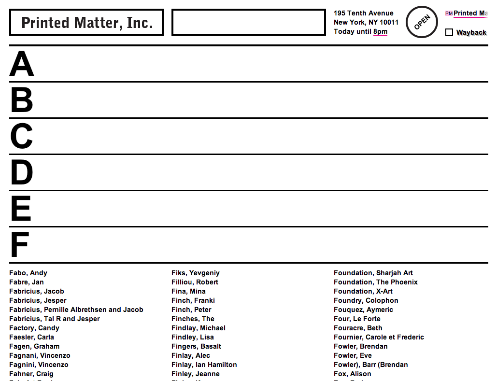

Linked By Air

Printed Matter
Medium:Website
Client:Printed Matter
Year:2013
Printed Matter, an art book store located in New York’s Chelsea district and the world’s leading seller of artists’ books, needed a website that would be a platform equally for art and commerce.
The new site needed to cater both to people buying books as gifts for the first time, and seasoned bibliophiles and curators researching the archive of this storied New York cultural institution. In addition to being a store, Printed Matter is also responsible for the NY Art Book Fair, which attracts 27,000 visitors annually. Their website had to reflect the organization’s status as a cultural hub in both NY and abroad.
Finally, it needed to be approachable for the thousands of artists who sell their books through Printed Matter: a real-world social network of production and consumption that began in 1976.